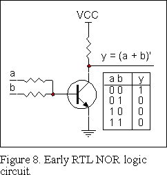
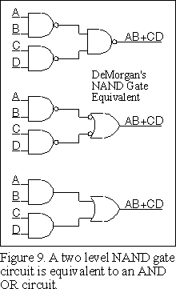
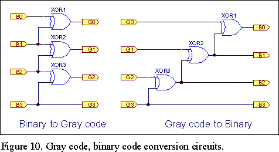
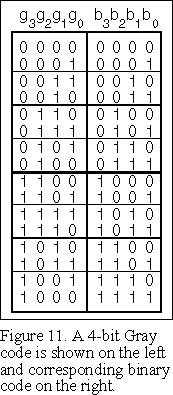
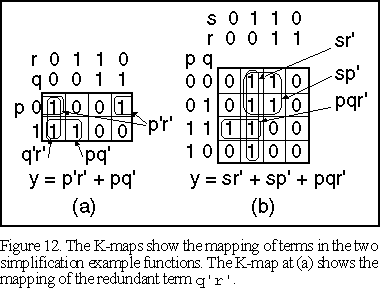
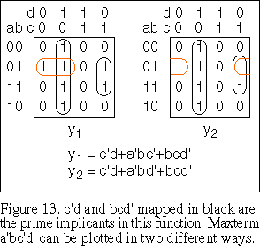
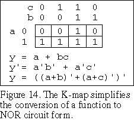
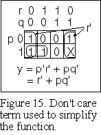
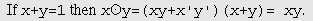
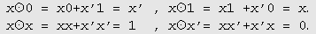

Boolean Algebra revisited - Page 2
An Introductory but fresh look at Boolean Algebra
- Continuation from Page 1
- Simplification of inclusive OR functions
- Examples of simplification of Boolean functions
- NAND and NOR logic circuits
- Two additional theorems for the XOR algebra
- Duality in Boolean algebra
- Minterms, maxterms and canonical forms
- The canonical forms of the XOR algebra
- Karnaugh maps
- Don’t care terms
- Summary of the theorems of Boolean algebra
- Added note
- Conclusion
- Buy a Book
 Simplification of inclusive OR functions
Simplification of inclusive OR functions
One of the uses of Boolean algebra is to simplify Boolean functions. In the case of the XOR algebra, simplification is dealt with in separate parts of this series of papers. For the inclusive OR algebra there are a few cases that occur often enough to justify calling them simplification relations.
| 1. | y = a + ab | |
| = a(1 + b) | distributive theorem used to take out a common factor | |
| = a | 1 + anything = 1, a1 = a |
| 2. | y = a + a'b | |
| = a(b+b') + a'b | a= a1 = a(b+b') | |
| = ab + ab' + ab + a'b | ab = ab + ab, term duplicated | |
| = a(b+b') + b(a+a') | take out the common factors | |
| = a + b | b+b'=1, etc. |
| 3. | (a+b)(a+b') = aa+ab+ba+bb' | expanding by the distributive law |
| = a(1+b) | since bb'=0, duplicate term ba removed | |
| = a | 1+anything=1, a1=a |
Simplification relations for inclusive OR algebra are therefore:
| a+ab = a | a+a'b = a+b | (a+b)(a+b') = a |
 Examples of simplification of Boolean functions
Examples of simplification of Boolean functions
The following two examples will give you some idea of how to use the theorems for simplification of Boolean inclusive OR functions. Examples of simplification of XOR functions are covered in other papers in this series and will be left to those papers.
| 1. | y = p'r' + pq' + q'r' | |
| = p'r' + pq' + q'r'(p + p') | q'r' = q'r'1 = q'r'(p+p') | |
| = p'r' + pq' + pq'r' + p'q'r' | distributive theorem | |
| = p'r'(1 + q') + pq'(1 + r') | taking out common factors | |
| = p'r' + pq' | 1+q' = 1, etc. |
Note that we have used the distributive and commutative laws in two of the steps. The term q'r' is said to be redundant. This becomes clear when we look at Karnaugh maps.
| 2. | y = r's + p'q's + p'qrs + pqr' | |
| = s(r' + p'q' + p'qr) + pqr' | distributive theorem |
Note that the r in the term p'qr is redundant according to the second simplification theorem.
| Therefore: | y = s(r' + p'q' + p'q) + pqr' | |
| = s(r' + p'(q' + q)) + pqr' | distributive theorem | |
| = s(r' + p') + pqr' | (q'+q)=1, p'1 = p' | |
| = sr' + sp' + pqr' |
 NAND and NOR logic circuits
NAND and NOR logic circuits
The first integrated circuits to appear on the market were Fairchild RTL logic circuits. A basic RTL gate circuit is shown in Figure 8. A high signal on either or both inputs will drive the output low, whilst a low input on both inputs allows the output to be taken high by the resistor in the collector circuit. From the truth table in the figure you can see that the circuit functions like an OR gate with an inverter on its output. Hence this circuit is called a NOR gate.
| Ask your school or Uni library to purchase a copy of my book "Introduction to Digital Circuit Theory". ISBN: 978-0-9581894-1-5. |
This type of circuit was quickly superseded by more efficient circuit types. You can see that the collector resistor will form a voltage divider with circuits that it is connected to. This imposes severe limits on the voltage levels of logic signals and on the fan-in and fan-out that can be achieved with the circuit. Since the output of the circuit is not driven high it will also be slower, due to stray capacitance in the circuitry that follows it, when the output rises compared with when the output falls. This circuit is far from ideal but made a simple transistor circuit that found plenty of use when it first appeared.
The NAND gate became a more popular circuit type to work with. A NAND gate is equivalent to an AND gate followed by an inverter. A NAND gate has the form y=(ab)'. A NOR gate has the form y=(a+b)'.
To implement a NAND or a NOR circuit the function to be implemented is manipulated into the required one of these forms. Both forms have a parenthesis and final inversion. Consequently the function needs to be inverted twice. The first inversion will produce the parenthesis and final inversion. The second inversion needs to be done in such a way that additional NAND or NOR forms are produced. The steps are carried out as in the following example:
| y = a + bc | ||
| = (a'(bc)')' | This is the NAND form |
In applying DeMorgan's theorem to the function, the term bc was not expanded when an inversion for it was called for. Otherwise it would have been necessary to invert it back again.
Note that the complete circuit consists of two NAND gates. One of the gates has the variables b and c as inputs. The other has the output of the first NAND gate and the variable a inverted as inputs. The inversion on a can be achieved with an additional NAND gate if necessary.
To get the NOR form, the term bc is expanded out and the process continued as follows:
| y = (a'(b' + c'))' | ||
| = (a'b' + a'c')' | ||
| = ((a + b)' + (a + c)')' | NOR circuit form |
In this procedure the second inversion is expanded to produce separate product terms and the product terms are inverted once again by DeMorgan's theorem to give the final NOR form for the function. Finding the NOR form is facilitated by first plotting the zeros on a K-map of the function to get the inverse of the function. Inverting this function again with DeMorgan's theorem gives the NOR form directly. This will reduce the number of steps to get the NOR form. The use of K-maps is described later in this paper where you will find out how to use them. In both cases the result is a two level circuit consisting of either NAND gates or NOR gates. In this particular case the NOR circuit requires three NOR gates but if you count the extra inversion on the variable a in the NAND gate circuit the circuit complexity is about the same for each circuit.
Note that a two level NAND circuit is equivalent to an SOP circuit. This is illustrated in Figure 9. The output NAND gate is replaced by its DeMorgan's equivalent, which is an OR gate with inversions on each input. You can then see that the inversions between the two levels of gates cancel out leaving the AND OR form. NAND gates are convenient to work with. With the original RTL circuit the NOR circuit approach was mandatory to work with.
Figure 9 represents a graphical method of working. A characteristic of the design of digital circuits with Boolean algebra is that there are nearly always both an algebraic method and a graphical method of working for a particular design solution. A similar procedure to that of Figure 9 exists for NOR circuits which develops into a Product of Sums form. This result follows the dictates of duality covered later on this page.
 Two
additional theorems for the XOR algebra
Two
additional theorems for the XOR algebra
1. Disjunction theorem. This theorem will be used to convert between AND, OR Invert logic and XOR logic.
This theorem states that if g, h are functions of the same switching circuit variables, then:
| If: f = g h and gh = 0 | then f = g+h | Disjunction theorem |
This theorem can be proved as follows:
| f = g h = gh' + g'h | From XOR operator definition | |
| = gh' + g'h + gh | since gh = 0 | |
| = g(h + h') + h(g' + g) | collecting terms | |
| = g + h | which is the required result |
2. Transposition theorem. This next theorem gives XOR algebra an unusual degree of freedom.
If: f, g, h are functions of the same switching circuit variables and f = g h, then g = f h and h = g f
This theorem is derived as follows: Given that: f = g h, then adding h (mod-2) to both sides of the equation gives:f h = g h h = g Since h h cancels out.
Therefore g = f h
Similarly h = g f Transposition theorem
Some of the applications of this theorem are given in the following paper in this series devoted to XOR algebra. You will find these applications when you reach that part of the XOR paper. An application that will be described here is to derive a Gray code to binary code converter circuit. The Gray code is described in more detail later in this paper.
The Gray code is derived from the binary code bit by bit from the relation: gn = bn bn+1 where bn and gn are the nth most significant bits of the binary and Gray codes respectively, except for the most significant bits that are the same for both codes.
We require the inverse code conversion or Gray code to binary code converter circuit. Applying the transposition theorem to the above expression gives a relation from which the inverse code conversion is found: bn = gn bn+1.
For example consider a four input circuit with most significant bits: b3 = g3. Substituting into the formula gives: b2 = g2 g3. Continuing to substitute into progressively less significant bits gives the complete Gray code to binary code converter circuit:
| b0 = g0 g1 g2 g3 | |
| b1 = g1 g2 g3 | |
| b2 = g2 g3 | |
| b3 = g3. |
This circuit can be constructed with a cascade of three XOR gates as seen in Figure 10.
 Duality in Boolean algebra
Duality in Boolean algebra
The properties inherent in Boolean algebra result in the phenomenon of duality in this algebra. The inclusive and exclusive OR algebras each have their own duality characteristics.
For the inclusive OR algebra, duality can be expressed by the statement: Replacing all AND operators with OR operators, replacing all OR operators with AND operators, replacing all 0s with 1s and replacing all 1s with 0s on both sides of any of the basic theorems of the inclusive OR algebra produces another of the basic theorems.
Consider Figure 4 and apply this to each of the basic theorems of the AND and OR operators to see that this result is applicable.
For the XOR algebra, consider the basic theorems for this operator given in Figure 4. Apply the XOR inversion theorems to both sides of any of the basic theorems of the XOR operator and you get another of the basic theorems. Next apply the transposition theorem given in the previous section to any of the basic theorems of the XOR operator and you can see that another of the basic theorems results.
The XOR operator has a double duality property that gives this operator a great deal of flexibility. Any of the basic theorems of the XOR operator can be transformed into any of the other basic theorems through applications of the duality properties.
Note that duality in the AND OR theorems involves both these operators, whilst duality in the XOR operator involves only the XOR operator. See how this works in Figure 7 as well as in Figure 4.
 Minterms, maxterms and canonical forms
Minterms, maxterms and canonical forms
A concept that we need is the idea of a canonical form for Boolean algebra. A Boolean expression can be expanded by ANDing any term with a missing variable by the sum of that variable with its inverse. Let p be a term in a Boolean expression, then p=p1=p(q+q'). As already shown, this does not alter the value of the expression. If this is carried out for all missing variables and for all terms, the result is the canonical expansion for the expression. This form of the expansion is called the minterm canonical form.
For example:
| A+B = A(B+B') + B(A+A') = AB + AB' + A'B |
A dual form of the expansion is also possible, by expanding the expression into a product of sums. This is known as the maxterm canonical form. This will be demonstrated in an example of these forms shortly.
There are 2n possible entries for a truth table of n variables. The minterms of an expression correspond with the entries in the truth table for the expression that have the value 1. Since the inverse of a function is found by replacing all 1s with 0s and all 0s with 1s in a truth table for the function, the inverse of a function with m minterms is the remaining (2n-m)minterms.
In the following example a shorthand way of writing the minterms has been used. The sigma notation replaces each minterm with a decimal number corresponding to the binary number obtained by replacing each variable with a 0 or 1 depending on whether the variable is primed or not. Since the order of the variables is important for this notation this is shown in parenthesis. Each minterm must of course show the variables in the same order.
The following example shows the expansion of a function into minterms and the subsequent derivation of the inverse of the function.
B + A'C |
= B(A+A')(C+C') + A'(B+B')C |
| = ABC + ABC' + A'BC + A'BC' + A'BC + A'B'C | |
| = ABC + ABC' + A'BC + A'BC' + A'B'C | |
| = S(ABC)1,2,3,6,7 |
The inverse of the function is the remaining minterms. ie. S(ABC)0,4,5
(B+A'C)' |
= AB'C + AB'C' + A'B'C' |
| = AB'(C + C') + (A + A')B'C' | |
| = AB' + B'C' |
Taking the inverse of both sides and using DeMorgan's theorem with the first and third lines of the right hand side:
B + A'C |
= (A'+B+C')(A'+B+C)(A+B+C) |
| = (A'+B)(B+C) |
The right hand side of the first line above is the maxterm canonical form of the expression and the second line is the distributive or Product of Sums form of the expression.
The fact that an arbitrary Boolean expression can be expanded into canonical form implies that the algebra derived is complete in the sense that any desired function of the given variables can be represented by it. Hence the AND, OR and Invert operators are sufficient to form a complete Boolean algebra.
 The canonical forms of the XOR algebra
The canonical forms of the XOR algebra
The disjunction theorem can be used for expressing a function given in terms of the + operator in terms of the operator. The function in terms of the + operator is expanded to minterm form, so that all terms are disjoint (i.e. the product of any two terms is 0). The + operators can then be replaced with operators.
This means that any function can be expressed in XOR form directly from its truth table. A canonical form for the XOR form is therefore, with three variables:
C1. f(abc) = a0a'b'c' a1a'b'c a2a'bc' a3a'bc a4ab'c' a5ab'c a6abc' a7abc
where: ai = 1,0 depending on whether the ith term is present or not.
An alternative canonical form found by expanding primed variables with x'=x 1 and cancelling duplicate terms is, with three variables:
C2. f(abc) = b0 b1a b2b b3c b4ab b5ac b6bc b7abc
where: bi = 1,0 depending on whether the ith term is present or not.
Other canonical forms are possible besides the two shown here. For example you could replace all unprimed variables with primed variables. We will just consider the two forms shown here. A generalised mathematical relationship can be developed between the ai and the bi in these canonical forms but you can probably get the idea from the above three variable forms.
The canonical expansions imply that any Boolean function can be expressed in terms of the AND and XOR operators. XOR algebra is therefore also a complete Boolean algebra.
 Karnaugh maps
Karnaugh maps
As seen in a previous section, any given Boolean function can be expanded into a sum of minterms. This result is made use of in a graphical method of treating Boolean functions. The method is basically the same thing as a truth table, except that the list of variations of the variables in the function are ordered according to a special code called the Gray code.
The Gray code has useful symmetries that simplify the use of the method. The graphical construction using the Gray code is called a Karnaugh map or K-map.
Figure 11 has been drawn to illustrate the features of the Gray code. Four bits of the Gray code labelled g3 down to g0 are shown on the left together with the corresponding bits of the binary code on the right. The least significant bit of the Gray code g0 counts up 0, 1 in the first two counts and then does the reverse in the next two counts. This pattern repeats every successive four counts. In the next more significant bit g1 the pattern starts with two 0s and two 1s and this pattern is reversed for the next four counts. The pattern then repeats every eight counts. In each more significant bit the pattern doubles again, except that there is no reversal in the most significant bit of the Gray code.
In Figure 11 you can see that the relationship between the Gray code and binary code bits given earlier: gn = bn bn+1 holds.
The main feature of the Gray code is that only one bit in any count changes value in an adjacent count. This results in symmetries that facilitate the simplification of functions plotted on a K-map. The symmetries are indicated in Figure 11 with horizontal lines of different thickness. The thickest line divides the count sequence exactly half way through the count. The next thickest lines are half way between the top and bottom of the count and the thick line half way through the count. The thinnest lines are half way between these lines.
If you take two rows of the count equidistant from any symmetry line but no further than the next thicker line you will see that the counts there differ by one bit. The symmetry lines have been shown with different thicknesses for demonstration only. Normally these lines will be shown all the same thickness or may be omitted if there is no ambiguity.
Simplification in the inclusive OR algebra is based on the theorem x+x'=1. Every time we can find common factors that allow this relationship to appear means that we can combine two terms and eliminate the appearance of a variable from the function that we are simplifying. We will label the columns of the Gray code with variable names. A 0 in the column for a variable will represent the inverse of the variable whilst a 1 will represent a logic true variable.
Examples of K-maps are shown in Figure 12 which show how the Gray code is used. The K-map provides one square for each minterm in a given function. The Gray codes label the squares. A K-map can be one or two dimensional. A two dimensional K-map requires less writing to label all the squares. The complete label is made up of the Gray codes on the side and top of the K-map which identifies one of the minterms. For example, the top left hand square in (b) is labelled and identifies the term as p'q'r's'.
The function to be plotted is effectively expanded into canonical form and 1s placed in the K-map corresponding to the positions for each minterm. Individual terms are easily expanded as they are plotted on the K-map by recognising the pattern produced by adjacent 0s and 1s in the Gray code. The Gray code symmetries position minterms that can be combined to be either adjacent to or to be equidistant from symmetry lines as described for Figure 11. A rectangle is drawn around groups of 1s that can be combined, a process called mapping. All terms in a function are mapped in this way to find a simplified form for the complete function, using the largest possible mappings. The 1s are combined in groups of powers of 2. In Figure 12 groups of two or four terms are combined. If a term cannot be combined, it is plotted on its own.
Figure 12a shows one of the simplification example functions. Look at the mapped rounded rectangle labelled pq'. If you follow the edges of this rectangle up to the Gray code labels you will see that it covers a 0 and a 1 for variable r, whilst q is 0. The 0 and 1 for variable r corresponds with the theorem r+r'=1 as required for simplification. Similarly if you follow the edges of the rectangle to the Gray code label on the left you can see that variable p has the value 1. Therefore the rounded rectangle maps the term pq'. The term p'r' is mapped with the two minterms p'q'r'+p'qr'; that are equidistant from the symmetry about the vertical line in the middle of the map. Taking out the common factor p'r' eliminates (q'+q) and leaves the original term p'r'. The mapping for the redundant term q'r' can be seen to be already mapped by the other two terms and need not be mapped again.
Figure 12b shows the other example used to demonstrate simplification. After mapping the individual terms on the map as 1s it is easy to see how the function can be simplified by mapping the 1s according to the rules described. When determining the mappings to use, you should look for minterms that can only be combined with other minterms in one group of terms. These groups of terms are called prime implicants. For example consider the minterm p'qr' in figure 12a. This minterm can be combined with the minterm p'q'r' to produce the simplified term p'r' but cannot be combined with any of the other minterms. Hence p'r' is a prime implicant.
After mapping all prime implicants, if there are any remaining minterms there will be a choice of ways to map these minterms. This will lead to more than one solution for the simplified form of the function. An example is shown in Figure 13 where a lighter colour has been used to plot the term that is not a prime implicant. The choice of which form to take for the final solution may be arbitrary or there may be some other consideration that will help the choice such as convenience in the physical implementation. Both choices are equally valid.
Figure 14 shows how a K-map can simplify conversion of a function to NOR circuit form by plotting the 0s on the K-map. The NOR form appears from this with just one inversion with DeMorgan's theorem.
K-maps are used for paper and pencil design purposes. Improved methods of simplification for use with computer programs have been invented but these are not discussed in this paper. K-maps are very useful for working with functions with small numbers of variables and for studying digital design techniques. They will find significant use in the Intelligent Logic page that follows.
 Don’t care terms
Don’t care terms
In some examples, there are terms that either cannot physically occur due to the nature of the problem or for some other reason it makes no difference to the performance of the resulting circuit what values these terms have. These terms are called Don’t Care terms and are represented on K-maps with the letter X. Don’t care terms may be used to simplify the logic expressions for the example if the opportunity arises.
For example, if the example in Figure 12a had the don’t care term pqr' as represented in Figure 15 with the X, then the expression could be simplified as shown with the saving of one occurrence of the variable p. The mapping for the term p'r' has been extended to cover four minterms.
 Summary of the theorems of Boolean algebra
Summary of the theorems of Boolean algebra
The relation between the inclusive OR and the EOR operators is: a b = ab'+a'b
AND OR XOR
Basic theorems
aa = a a+a = a a a = 0 aa' = 0 a+a' = 1 a a' = 1 a0 = 0 a+0 = a a 0 = a a1 = a a+1 = 1 a 1 = a'
Commutative law:
ab = ba a+b = b+a a b = b a
Associative law:
(ab)c = a(bc) (a+b)+c = a+(b+c) (a b) c = a (b c)
Distributive law:
a(b+c) = ab + ac a(b c) = ab ac (a+b)(a+c) = a+bc
Inversion theorems
DeMorgan's theorem for the inclusive-OR algebra: The inverse of any Boolean function of the inclusive-OR algebra can be found by replacing all occurrences of AND operators with OR operators, replacing all OR operators with AND operators, priming all unprimed variables and unpriming all primed variables.
XOR inversion theorems: (a b)'= a' b = a b' a b = a' b'
Simplification relations for the inclusive OR algebra
a+ab = a a+a'b = a+b (a+b)(a+b') = a
Additional theorems for the XOR algebra
If: f=g h and gh=0, then f=g+h Disjunction theorem
If: f, g, h are functions of the same switching circuit variables and f=g h, then g=f h and h=g f Transposition theorem
The equivalence algebra is similar to the XOR algebra but has its own basic and some other theorems and has strong duality with XOR algebra. For example the 0s and 1s behaviour in the even and odd characteristics are reversed. The disjunction theorem becomes a conjunction theorem. Given Boolean variables
x and y: This means that if an arbitrary function of Boolean variables is expanded to maxterm form, the product operators can be replaced by equivalence operators since the maxterms are conjoint, which establishes the equivalence algebra as a third complete Boolean algebra. The theorems and characteristics of this algebra can be readily derived by the procedures described in these pages. For example:

Compare these with the corresponding basic XOR theorems. The transposition theorem and the inversion theorems given in the third set of truth tables in figure 6 have the same form in both the XOR and equivalence algebras.
The distributive law for this algebra has the same form as the POS distributive law of AND, OR invert algebra:
The equivalence algebra has a relationship to the XOR algebra that is similar to the relationship between the maxterms and minterms in AND, OR, invert algebra. The addition of this third Boolean algebra provides a strong symmetry amongst the Boolean algebras.The inverse of an SOP expression sometimes has fewer product terms than the original expression and in this case is a useful way of reducing the number of product terms required to represent a logic function. However, the inverse of an ESOP expression only affects one product term or the addition of the constant 1. The equivalence operator is simply the inverse of the XOR operator. Consequently no significant reduction in logic terms would be expected from the use of the equivalence operator in place of the XOR operator. However, this operator might make a useful alternative way of expressing a Boolean function. Some form of mixed logic might be useful if you have the capability of creating it.
The reference for this note is: R. F. Tinder "Engineering Digital Design" Second edition, Academic press, 2000. Useful duality relationships between the XOR algebra and the equivalence algebra can be found in that reference.
This paper has presented an introductory review of Boolean algebra taking into account all three of the binary operators of this algebra. The development is appropriate for use in the design of digital circuits but is no less applicable to other uses of Boolean algebra. This paper has shown that Boolean algebra consists of at least three complete algebras that are interlinked. Each of these algebras has its own theorems and characteristics. The basic theorems for two of these algebras have been derived side by side and their characteristics developed and described.
The interested reader who is learning to use Boolean algebra for the design of digital circuits should get some practise by working through a few examples. You can make up examples yourself or find exercises in a suitable digital design textbook. To make up examples yourself, simply draw a K-map and place a few 1s on it. Then, see how you can write the expression for it in a simplified form. Check your results by working backwards or plug the problem into one of the educational synthesis or simulation programs. You should be conversant with the material presented here in order to follow the other papers available in this series.
The circuits in this paper are described as combinatorial circuits. Following this paper you will be able to read a paper on asynchronous digital circuits, where it will be shown that applying feedback in a combinatorial circuit results in memory appearing in these circuits. The memory in these circuits provide the circuits with the ability to make decisions based on the order in which the inputs to the circuits are applied and perform a choice of actions based on this input history. The resulting circuits are described as asynchronous sequential circuits. The sequential behaviour of these circuits develops a whole new interest for digital circuits, namely control and automation.
This paper has derived the basic results for the XOR algebra. Following this you can read further articles on XOR algebra that develop and describe methods of simplifying and working with these circuits. Simplification methods for XOR operators include a systematic method of using a conventional K-map with these circuits. The technique allows both inclusive OR and XOR functions to be treated on the same K-map. An algebraic method of simplification that can be used with paper and pencil for up to six variable functions is also presented.
Boolean expressions can often be simplified in more than one way. This is true for both inclusive OR and XOR functions. A final paper on XOR algebra presents some multiple solution results and describes how these can be found. Boolean algebra provides plenty of scope for experimentation and discovery.
Buy the second edition of the book entitled:
"Introduction to Digital Circuit Theory" (ISBN: 978-0-9581894-1-5). The book is
in the form of a monograph with comb binding, card back and clear cover in A4 format. The
current revision includes a number of inadvertent error corrections. The single copy price
is $39.95 (Australian dollars), which includes all currency fees and airmail charges if
purchased with the Buy Now link. PayPal will carry out the conversion of your
currency to Australian currency in a secure transaction and email me your order. Please
follow this link |
Boolean Algebra - Page 1 OR Top for navigation menu OR Intelligent Logic:
(Copyright) David N. Warren-Smith, CPENG
Digital Logic Systems, South Australia
Modifications: 22 January 2002, 24 February 2002, Figure 13 corrected: 6 April 2002, Added note: 16 January 2003.
Please notify me if you find any errors or omissions.